LT100 的大脑，也是电源中枢。ESP32-WROOM-32、1Mbps 舵机总线、0.91 英寸 OLED 和 WS2812 灯控都长在这一块 65×30mm 的板子上——接上 12V 和舵机就能开工，不画板、不焊线。
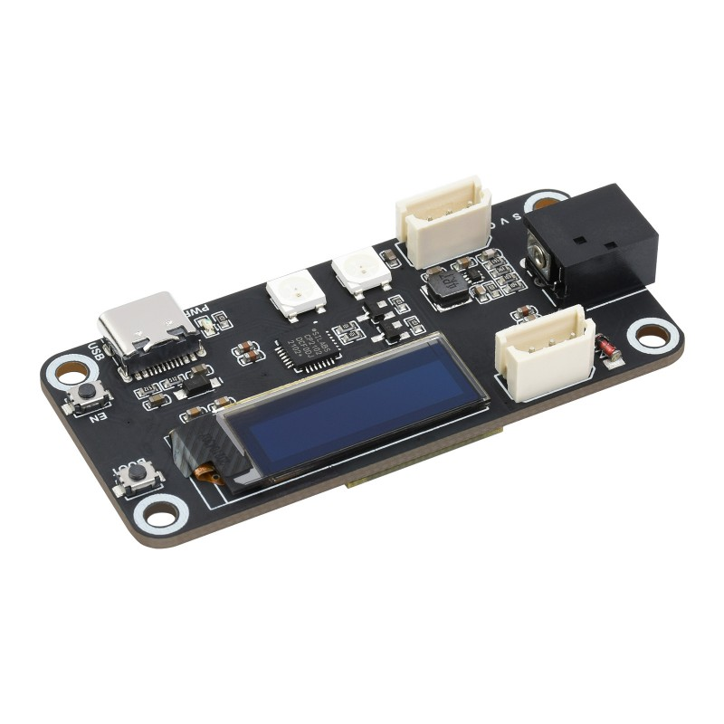
官方图，编号对应下面的说明。先认接口，再接线就不会拿错口。
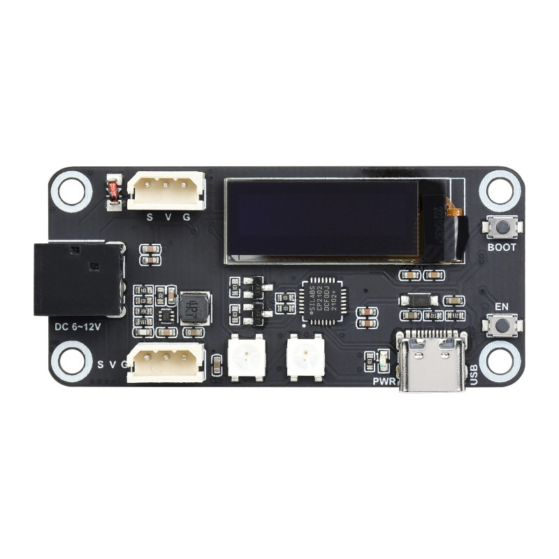
5.5×2.1 圆孔。电压原样送到舵机母线，电源电压必须和舵机一致——LT100 用 12V。
丝印 S / V / G，两个口内部并联。三只 ST3215 串在同一条总线上，接哪个口都行。
烧录和串口调试（115200）。不给舵机供电——只插 USB 时舵机不动是正常的。
开机三行：MAC 地址、电压 + IP、工作模式；扫描时还显示舵机数量和当前位置。
状态灯：蓝 = 连 Wi-Fi，浅绿 = 扫描舵机，扫完熄灭。和灯环共用 GPIO23，编号 0、1。
复位和下载。板子带自动下载电路，正常烧录不用手按。
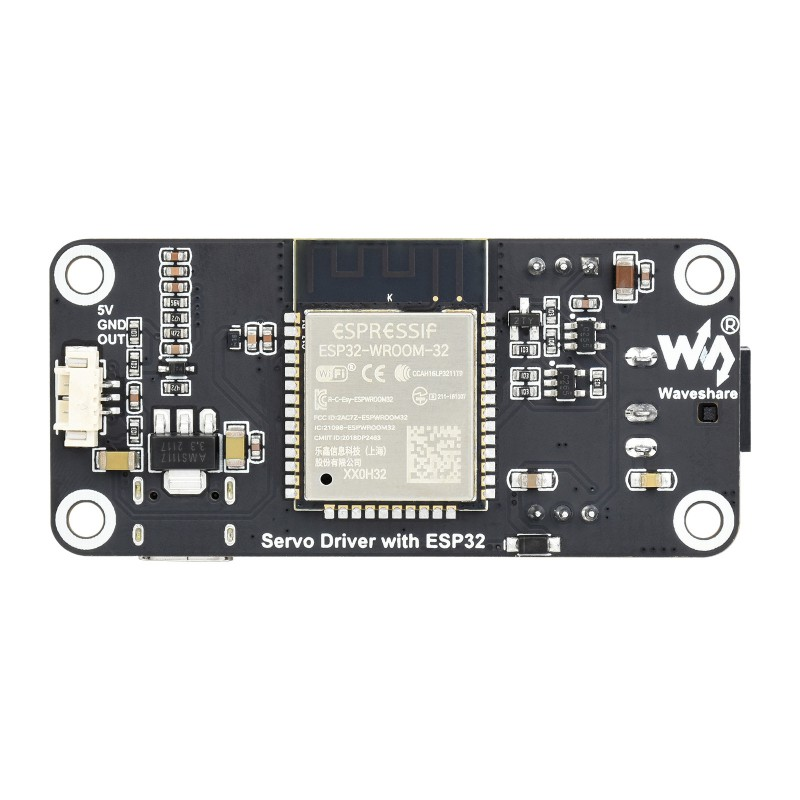
板上丝印 PH1.25，实际配 1.25mm 3P 插头；针脚 5V / GND / OUT，OUT 接灯环的 DIN。5V 从板载取，LT100 按约 1A 预算，灯环限 40% 亮度（约 0.6A）。
双核 240MHz，Wi-Fi + 蓝牙 + ESP-NOW。板载天线在模组顶端，装机时让这一端朝外，别贴金属。
编号沿用上面的实物图。先看整页，再按编号看细节——每张卡片一边是板上的位置，一边是原理图里对应的那一块。
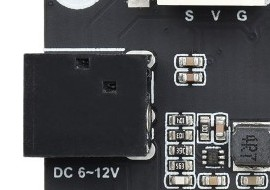
6–12V 从 DC 口进，U5 开关电源降到 5V，AMS1117-3.3 再出 3.3V；USB 的 5V 经二极管并到 5V 轨，只供板载逻辑和灯。
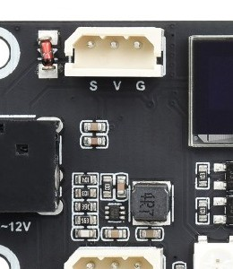
SN74LVC1G126 负责发、SN74LVC1G125 负责收，TXEN 切方向，把 UART 合成一根半双工 DATA；H2、H3 完全并联，VCC 直连 6–12V——插 USB 舵机不动就是这个原因。
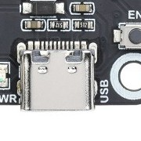
CP2102 做 USB↔串口；DTR / RTS 经两个 S8050 拉 EN 和 IO0，烧录时自动进下载模式——所以 6 号两个按键平时不用按。
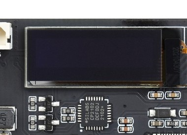
0.91" 128×32，SSD1306，I2C 两根线（4.7K 上拉），3.3V 供电；开机那三行字就显示在这。
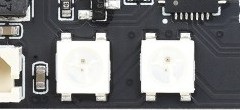
IO23 进第一颗 WS2812，两颗串联，显示开机、扫描和故障状态。
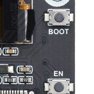
一颗复位（KEY_RST/USER，接 EN），一颗进下载（KEY_FLASH，接 IO0）；平时由自动下载电路接管，只有强制下载时才需要手按。
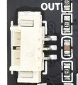
H1 是板上的 1.25mm 3P 灯口，三个脚：5V / GND / LED-OUT。LED-OUT 是灯链末端，接灯环的 DIN——所以灯环在固件里接在板载两颗之后。
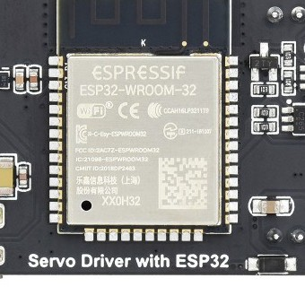
模组引脚全部扇出：IO19 / IO18 去舵机串口，IO21 / IO22 去屏，IO23 去灯；板载天线在模组顶端。
| 主控 | ESP32-WROOM-32，双核 240MHz，Wi-Fi / 蓝牙 / ESP-NOW |
|---|---|
| 供电 | DC 6–12V（5.5×2.1），直接供舵机母线；USB-C 只做烧录和调试 |
| 舵机总线 | UART 1Mbps，GPIO18 = RX、GPIO19 = TX；一条总线最多 253 个 ID |
| 屏幕 | 0.91" OLED，I2C（GPIO21 = SDA、GPIO22 = SCL），地址 0x3C |
| 灯控 | GPIO23；2 颗板载 WS2812 + 1.25mm 3P 扩展口（5V / GND / OUT，丝印 PH1.25） |
| 烧录 | Arduino IDE 选 ESP32 Dev Module，上传 921600；板载自动下载电路 |
| 尺寸 | 65 × 30 mm；安装孔 Ø2.75，孔距 58 × 23 mm |
项目里跟主控板有关的原件、文档和课程资源，按目录排。微雪原件都来自 官方 wiki；reference/ 里的文件只读——不改名、不编辑。
安装包、驱动和离线支持包都在项目的 resources/ 里，拷到电脑上即可安装。以后课程用的工具也统一放这个文件夹。
注意：后面烧录例程会覆盖出厂 Web UI 固件；原厂固件已存档在 factory-firmware-st.rar，需要时可按微雪手册刷回。
双击运行，一路默认选项。装完先不用打开；等第 2 步的驱动和第 4 步的支持包都就位，再打开 IDE。
用能传数据的 USB-C 线连接板子和电脑（只能充电的线不行），打开「设备管理器」→「端口 (COM 和 LPT)」：
Silicon Labs CP210x USB to UART Bridge (COMx)：驱动已就绪，跳过安装。装法：打开 resources\CP210x_Universal_Windows_Driver\，右键 silabser.inf → 安装（Win11 没看到「安装」时，点「显示更多选项」）；或者在设备管理器里右键黄色设备 → 更新驱动程序 → 浏览到这个文件夹。装完拔插一次再看端口。
命令行版的 Arduino，用来编译、烧录、批量装库；和 IDE 共用同一套 core 和库。课程用 IDE 就够，装它是为了方便脚本和 AI agent。
它不用安装：exe 已经在 resources\arduino-cli\，拷走就能用。
验证：打开这个文件夹，在地址栏输入 powershell 回车（会在当前目录打开 PowerShell），执行：
.\arduino-cli.exe version看到 arduino-cli Version: 1.6.0 … 就说明能用了。配置不用改：离线包里已经带好。
resources\arduino-cli\ · 免安装
Arduino IDE 本身只带 AVR 板卡。要让 IDE 认识并编译这块板，官方流程需要下面这些组件：
esp32 by Espressif Systems（4.0.0）—— xtensa 编译器、烧录工具和 ESP32 底层库；没有它，IDE 里选不到这块板。SCServo，1.0.2）—— 飞特 ST3215 总线舵机控制库。课程直接给装好的离线包：resources\arduino-offline\（约 2 GB）。整个拷到电脑上，关闭 IDE 后，把里面两个文件夹复制到当前用户：
Arduino15\ → %LOCALAPPDATA%\Arduino15user-libraries\ → %USERPROFILE%\Documents\Arduino\libraries目标已存在就合并。学生机上有 AI agent 的，把这两条路径和包里的 README.txt 交给它，复制并验证即可。
验证：打开 IDE，确认两项：
Tools → Board 里出现 ESP32 Dev Module；File → Examples 里出现 SCServo、Adafruit SSD1306、U8g2。范围：这份包只覆盖经典 ESP32（ESP32 Dev Module / ESP32-WROOM-32），只带它的编译器，体积才能压到约 2 GB。其他型号（S3、C3、C6 等）不在包里，选了会编译失败。
resources\arduino-offline\ · 离线包（core + 工具链 + 库，约 2 GB）
四步做完，IDE 里能选板、能打开课程库，就可以烧第一个例程了。
先看懂灯怎么收颜色、怎么往下传，再烧例程。板载 2 颗和外接灯环共用 GPIO23。
每颗 WS2812 把控制 IC 和红绿蓝三个发光二极管封在一个 5×5mm 的壳里，只有 4 个脚：VDD、GND、DIN、DOUT。数据从 DIN 进、DOUT 出，所以能一颗串一颗。
一颗灯要 24 个脉冲：8 个给绿、8 个给红、8 个给蓝。每个脉冲都是一次高电平——高得短是 0，高得长是 1；8 个脉冲拼成一个 0–255 的数，就是这一路的亮度。
每一路灯珠不是一直通电：IC 在一个很短的周期里把它打开一段时间、再关一段时间，然后重复。开的时间占得越多，这一路在颜色里占得越重；开关太快，眼睛看不到闪。
8 位数就是这一路「开的时间」档位：0 = 一直关，255 = 一直开，128 = 开一半。8 位不是 8 颗灯，是这一路的 256 档强度。
灯里没有单独的「亮度」参数：只有 G/R/B 三个数。把三个数一起改小，得到的是另一个颜色值（更暗的颜色），不是同一个颜色加一个亮度档。
发送顺序 G→R→B：G 150 · R 210 · B 75
占空比：R 82% · G 59% · B 29%
没有单独的亮度参数：三路数值就是颜色。
多个灯共用这一根线，像排队传纸条：数据按顺序发，每颗撕下最前面的 24 位，剩下的从 DOUT 传给下一颗。
代码里 leds.Color(r, g, b) 只是把三个 0–255 的数打包成 24 位，show() 再按顺序发出去。
LED_COUNT 写 2 只点亮板载；接一个环写 26，接两个写 50。先烧 01，再按需要往上加：02 双灯呼吸、03 单环、04 双环。
双击 examples\01_blink_rgb\01_blink_rgb.ino；没关联到 IDE 就用 File → Open。
Tools → Board → ESP32 Arduino → ESP32 Dev Module。这块板是 ESP32-WROOM-32，不要选 S3、C3 等其他型号。选完 Tools 菜单顶部会显示 Board: ESP32 Dev Module。
插好 USB 线，Tools → Port 选 Silicon Labs CP210x 对应的 COM 口。列表里没有这个口，回第 2 步装驱动；选完顶部显示 Port: COMx。
点左上角 →（或 Ctrl+U）上传，第一次编译约 1–2 分钟。看到 Done uploading 后，两颗灯红蓝交替亮 0.4 秒、灭 0.2 秒；只点板载灯，USB 供电就够。
失败先关串口监视器；还失败就把 Tools → Upload Speed 降到 115200 再试。
改颜色、速度、亮度都在文件顶部的常量和 leds.Color() 里。接一个灯环 LED_COUNT 改 26，两个改 50；亮度不超过 40。
打开 examples\02_rainbow_breathe\02_rainbow_breathe.ino，上传方式同上。两颗灯取互补色，色相约 13 秒转一圈，亮度按正弦呼吸。
想改效果：hue = now * 5 控制转速，sin(now / 700.0) 控制呼吸周期，MAX_BRIGHTNESS 控制亮度上限。
打开 examples\03_ring_show\03_ring_show.ino。板载 0、1 加灯环 2–25 共 26 颗；两种效果每 8 秒自动切换，整条链亮度锁在 40%。
打开 examples\04_dual_ring_show\04_dual_ring_show.ino。板载 0、1 加两个 24 灯环（2–25、26–49），共 50 颗；三种效果每 7 秒切换，亮度 30%。
板载一块 128×32 的黑白小屏，接线已经做好。这一节先用 Adafruit 库显示滚动波浪线，再用 U8g2 做两个独立效果：星际穿越和旋转立方体，最后讲清楚它是怎么亮起来的。
实物 · 0.91 英寸，128×32 个点
每个点用 0（灭）或 1（亮）记录；128×32 = 4096 个点，也就是 4096 个 0/1，正好 512 字节。
所以这块屏只能显示黑白，不能显示彩色。
drawPixel 只是在内存里的图上涂一个点；display() 才把整张图发给屏幕。
U8g2 的写法一样：clearBuffer() 清空内存里的图，画完再 sendBuffer() 整张发给屏幕。
就像先在纸上画好，再整张递给屏幕。
0x00 是命令（设置），0x40 是像素数据；屏幕的供电和两根线都在板上接好了，代码里只需要指定地址 0x3C。
打开 examples\05_oled_wave\05_oled_wave.ino。先显示「LT100」开机画面，再显示一条滚动的波浪线和运行秒数。
U8g2 已经放进离线包的 user-libraries\U8g2，不用联网装。下面两个例程互相独立，烧哪个看哪个；启动时先显示约 0.9 秒标题卡，再进入动画。
06_oled_warp · 星际穿越：58 颗星点各带 x / y / z 三个坐标，z 不断减小；屏幕位置按 x/z、y/z 投影。z 越小，星点越靠外，看起来就是朝你飞过来；近处的星再画一条到上一帧的短线，形成拖尾。
examples\06_oled_warp\06_oled_warp.ino
07_oled_cube · 旋转立方体：立方体有 8 个顶点、12 条棱；先绕 Y 轴转，再绕 X 轴转。每个顶点按 1/(2.4+z*0.35) 做透视缩放，近大远小，最后把 12 条棱连起来；一个亮点跟着顶点转。
examples\07_oled_cube\07_oled_cube.ino
两个例程都把灯环调成低亮度环境光。为什么用 U8g2：它就是给这类单色屏做的，字体、线框、圆都有现成函数；LVGL 那类完整 GUI 框架更适合彩色触屏。代码开头 U8G2_SSD1306_128X32_UNIVISION_F_HW_I2C oled(..., 22, 21) 就是在选屏幕型号并指定 SCL=22、SDA=21；setBusClock(400000) 把 I2C 提到 400 kHz，动画才够流畅。
前面都是板子自己跑；这一节让电脑发命令，板子用 OLED、灯环和回包回应。串口也是后面接舵机的入口。
COMx 就是它。115200；8N1 下一字节约 10 位，约 11.5 KB/s。Serial = UART0，GPIO1=TX、GPIO3=RX，走 USB-C 的 CP2102；烧录和串口监视器都用它。
Serial1 = UART1，GPIO18/19，已经接 ST3215 舵机总线；串口例程不碰它。
打开串口监视器时板子可能复位一次，这是 CP2102 的 DTR/RTS 自动下载电路，不是故障。
你在串口监视器里敲的每个字符，都会先变成 ASCII 字节。例如 PING 是 50 49 4E 47，再补一个换行 0A；板子收到换行才认为“这一行说完了”。
所以行尾要选 Newline。不发换行，板子会一直等，命令不会执行。
回复也按行：成功 OK ...，失败 ERR 码 说明；PING 回 PONG 毫秒数；INFO / STAT 回一行 JSON。
STREAM 1 打开后每秒自动回一条 STAT，用来做实时曲线或监控；它只走串口，不抢 OLED 上刚才那条回复。
COLOR FF6600 为例电脑发 COLOR FF6600\n → 板子收齐一行 → 分出命令 COLOR 和参数 FF6600 → 转成 R=255、G=102、B=0 → 切到单色模式 → 灯环变橙色，OLED 第一行变 M:SOLID B:20 → 最后回 OK color=#FF6600。
起始 bit0 bit1 bit2 bit3 bit4 bit5 bit6 bit7 停止 0 1 0 0 0 0 0 1 0 1
这 8 位按低位先发读回来是 0100 0001，也就是 0x41，ASCII 字符 A。115200 8N1 下，一个字节连头带尾约 10 位，约 86.8µs；每秒最多约 11.5KB 有效数据。
8N1 = 8 个数据位、无校验（N）、1 个停止位。两边波特率不一致时，收方会在错误的位置采样，看到的就是乱码。
这个例程把前面几节接起来：串口收命令，OLED 显示，灯环执行，板子回包。按顺序做：
examples\08_serial_console\08_serial_console.inoTools → Port 选 CP210x 对应的 COMx。PONG 12345，说明电脑 → 板子 → 电脑整条链路通了。MODE RAINBOW、COLOR FF6600、BRIGHT 20、TEXT HELLO。STAT 回一条 JSON；STREAM 1 每秒自动回，STREAM 0 关。| 命令 | 作用 | 示例回复 |
|---|---|---|
HELP | 列出命令 | OK commands: ... |
PING | 测试链路 | PONG 12345 |
INFO | 芯片、MAC、Flash、SDK | {"type":"info",...} |
STAT | 运行时间、堆、收发计数、模式 | {"type":"stat",...} |
MODE SOLID / RAINBOW / BREATHE / OFF | 灯环模式 | OK mode=RAINBOW |
COLOR RRGGBB | 设颜色并切单色 | OK color=#FF6600 |
BRIGHT 0..40 | 亮度百分比 | OK bright=20 |
TEXT <ascii> | OLED 显示文字，5 秒 | OK text=HELLO |
CLEAR | 清除文字 | OK text cleared |
STREAM 0 / 1 | 每秒自动发 STAT | OK stream=1 |
SERVO ... | 预留，后续接舵机 | ERR 04 servo not enabled |
命令大小写不敏感，单行最长 96 字节。错误码：01 未知命令 · 02 参数/格式 · 03 越界 · 04 未启用 · 05 行太长。
> PING
PONG 12345
> COLOR FF6600
OK color=#FF6600
> STAT
{"type":"stat","up_ms":19720,"heap":321452,"rx":67,"tx":362,"cmds":8,"mode":"SOLID","color":"#FF6600","bright":20,"text":""}STAT 字段：up_ms 运行毫秒、heap 空闲内存、rx/tx 收/发字节、cmds 命令数、mode/color/bright 灯状态、text 当前文字。亮度上限 40%，是 50 颗灯全白时板载 5V 约 1A 的余量；TEXT 最多 20 个 ASCII 字符，中文需要额外字体。
M:SOLID B:20
> COLOR FF6600
OK color=#FF6600第一行模式 + 亮度，第二行最后命令，第三行最后回复；TEXT 显示 5 秒，之后回到最后回复，CLEAR 可以提前清。
灯环按 MODE 做环境光；LED_COUNT = 50 是板载 2 + 两个 24 灯环。只接一个也能跑，不接灯环就只有板载 2 颗。
板载 0 号灯闪 RX（收到字节），1 号灯闪 TX（发出数据）。发一条 PING，会先看到 0 号灯闪一下，再看到 1 号灯闪一下；MODE OFF 只关环境光，RX/TX 仍保留。
Arduino 串口监视器就能玩。想要自动演示或一直发命令，用 Windows 自带的 PowerShell 工具，不依赖 Python：
pwsh -File .\tools\serial-console.ps1 -List
pwsh -File .\tools\serial-console.ps1 -Port COMx
pwsh -File .\tools\serial-console.ps1 -Port COMx -Demo-List 列出 CP210x；只有一个时交互模式会自动选。-Demo 会依次跑 PING、INFO、彩虹、TEXT、STREAM、呼吸和绿色，最后把灯留在绿色。
如果提示“禁止运行脚本”，把命令换成 powershell -ExecutionPolicy Bypass -File .\tools\serial-console.ps1 ...，或让学生机上的 agent 处理。
| 现象 | 先检查 |
|---|---|
| 命令发了没反应 | 行尾是不是 Newline；先发 HELP 看板子是否在线 |
| 一打开监视器就重启 | CP2102 的 DTR/RTS 自动复位，正常；等启动横幅出来再发命令 |
| COM 口列表没有板子 | 装 CP210x 驱动；换一根能传数据的 USB-C 线 |
| 每台电脑 COM 号不同 | 看设备管理器；文档里写 COMx，不要照抄别人的端口 |
中文 TEXT 不显示 | 只支持 ASCII；中文要换字体 |
| 灯不亮 / 很暗 | 检查 BRIGHT 0..40、MODE、COLOR |
| 端口被占用 | 关掉其他串口监视器或工具，同一时间只开一个 |
| 上传失败 | 关串口监视器，确认 COM 口；必要时按 BOOT 再试 |
SERVO ID POS SPEED 命令，串口控制台就能同时管灯、屏幕和机械臂。